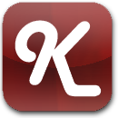

Knockout-Kendo.js
A project to create a complete and robust set of Knockout.js bindings for the Kendo UI widgets.

 Knockout.js
Knockout.js is an open source library that supports declarative data binding, dependency tracking, and automatic UI updates. To learn more, be sure to look at the documentation, examples, and tutorials.
Kendo UI, by Telerik, provides fast, clean, and configurable HTML5 UI widgets as part of a jQuery-based framework to support modern web development. For more information see the demos, documentation, and forums. Also, take note of the Kendo UI licensing terms.
Installation
Download the plugin from here or grab the latest build from the source. Reference knockout-kendo.min.js after the scripts for Knockout and Kendo UI (requires jQuery).
<script src="js/jquery.min.js"></script>
<script src="js/kendo.web.min.js"></script>
<script src="js/knockout-2.1.0.js"></script>
<script src="js/knockout-kendo.min.js"></script>Note: It is fine to reference Kendo UI scripts for individual widgets rather than all widgets (kendo.web.min.js), as this plugin will only create bindings for available widgets.
Browse the documentation/examples for each individual widget for usage information.